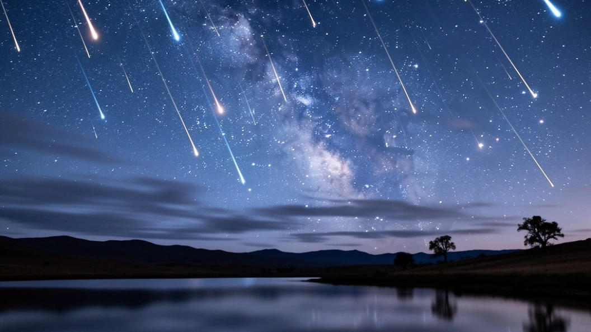

Метеорный поток (звездопад)
1. Как выглядит
С тёмного неба одна за другой падают яркие полоски. Они прочерчивают небосвод за доли секунды и гаснут. Вспышки могут быть белыми, голубоватыми, желтоватыми или красноватыми. Самые яркие метеоры оставляют после себя дымный след, который виден несколько секунд. В пик звездопада можно насчитать от десятка до сотни вспышек в час. Метеоры вылетают из одной точки на небе — её называют радиантом. Если поток очень сильный, кажется, что небо посыпает звёздный дождь.
2. История обнаружения и наблюдений
Древние китайцы в 687 году до нашей эры первыми записали наблюдение метеорного потока. В 1833 году над Америкой прошёл легендарный звездопад — Леониды. За час падало до ста тысяч метеоров. Люди решили, что наступил конец света. В 1799 году немецкий учёный Александр Гумбольдт заметил связь между падающими звёздами и кометами. В 1866 году итальянец Джованни Скиапарелли доказал, что метеорный поток Персеиды связан с кометой Свифта — Таттла. Американский астроном Деннисон Олкотт в 1920-х годах открыл несколько новых потоков, систематически фотографируя небо.
3. Природа явления
Земля на своём пути вокруг Солнца пересекает облако пыли, оставленное кометой. Крошечные песчинки (от размера пылинки до гальки) влетают в атмосферу на скорости до 70 километров в секунду. От трения о воздух они раскаляются и сгорают, оставляя светящийся след. Это не звёзды, и метеоры не падают на землю — частицы полностью испаряются в вышине. Если кусок долетает до земли, его называют метеоритом, но это уже не поток.
4. Связь с культурой и мифами
В Древней Греции считали, что падающие звёзды — это искры, отлетающие от колесницы бога солнца Гелиоса. Славяне верили, что так души умерших спускаются на землю или, наоборот, возносятся на небо. Появление звездопада часто связывали с исполнением желаний. В христианской традиции падающие звёзды считали падшими ангелами. У многих народов существовал обычай загадывать желание, пока метеор летит.
5. Условия для наблюдения
Нужна тёмная безлунная ночь вдали от городских огней. Лучшее время — после полуночи и до рассвета, когда Земля повёрнута к потоку своей передней стороной. Не требуется никакого телескопа или бинокля — они только сужают обзор. Лечь удобнее на раскладушку или коврик, смотреть прямо вверх. Надо дать глазам привыкнуть к темноте (минут 15–20). Одеваться нужно тепло, даже летом — ночью у земли бывает холодно.
6. Редкость и периодичность
Метеорные потоки случаются каждый год в одно и то же время. Земля проходит одни и те же облака пыли по расписанию. Самые известные: Квадрантиды (январь), Лириды (апрель), Персеиды (август), Ориониды (октябрь), Леониды (ноябрь), Геминиды (декабрь). Персеиды дают до 100 метеоров в час. Раз в 33 года Леониды устраивают настоящую бурю — тысячи метеоров в час. Сила потока со временем слабеет, потому что комета теряет пыль неравномерно. Некоторые потоки уже исчезли, а другие только зарождаются.
